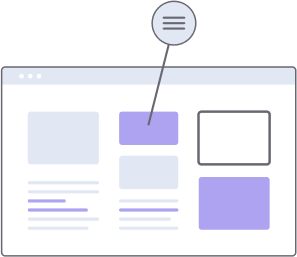
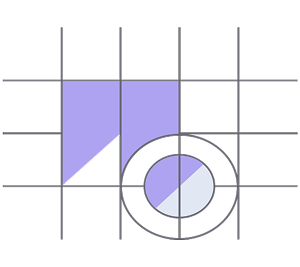

beautiful creative solutions
Expect nothing less than perfect
Setting up your own portfolio site is an awesome method for communicating who you are as an inventive, and to impart your abilities to the world. How about we investigate how to make a free portfolio and all that you ought to remember for it.
How we work
01
Web Design
Why investment portfolio is important to your career Allora can help you get your work noticed whether you are a graphic designer, product designer, web developer, writer, illustrator.

02
Branding
The portfolio website provides visibility for your work showing it to the people you want to see unlike the static black and white of traditional resumes online portfolios bring your work to life.
.png)
03
UI/UX Design
In full color it makes your participation in creative output a positive and direct experience. Potential clients and employers can immediately see your achievements and your uniqueness.
.png)
04
Creative Direction
The personal portfolio shows them your identity as a creative professional, the ideas behind your work and whether you are suitable for a particular job or project, put your work out in the world!
.png)
05
Motion Graphics
The portfolio conveys who you are most of us don’t come to a job interview with a bunch of unordered printouts you have to be ready get ready with Allora your best online alley.